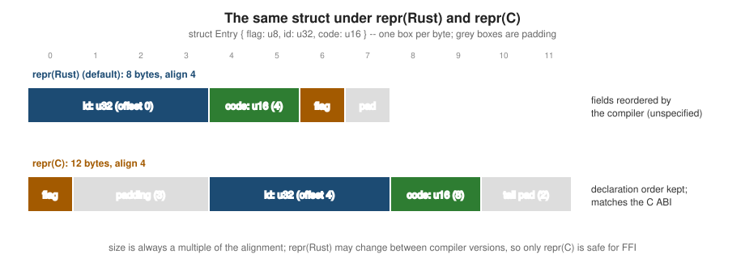

Memory Layout & repr
|
This content was generated with the assistance of AI and should be verified against the official documentation before being relied on in production. |
This page is written against Rust 1.99.0 and the 2024 edition, checked on 2026-10-06. Most Rust code never needs to
think about memory layout, but it matters for FFI, for squeezing data structures into cache, and for understanding why
Option<&T> costs nothing. The rules are short: every type has a size and an alignment; the default layout is
deliberately unspecified so the compiler can optimise it; and repr attributes let you ask for a specified one.
Size and alignment
-
The alignment of a type is the power of two that its address must be a multiple of: 1 for
u8, 2 foru16, 4 foru32/f32/char, 8 foru64/f64/pointers on 64-bit targets. -
The size is the distance in bytes between consecutive elements in an array of the type, so it is always a multiple of the alignment (padding included).
std::mem reports both. size_of and align_of are in the prelude since 1.80; size_of_val and align_of_val
measure a value (including dynamically sized ones through a reference); size_of_val_raw (1.99) does the same through
a raw pointer without creating a reference; offset_of! (1.77) gives a field’s byte offset.
use std::mem::{align_of_val, offset_of, size_of_val};
#[allow(dead_code)]
struct Entry {
flag: u8,
id: u32,
code: u16,
}
#[allow(dead_code)]
#[repr(C)]
struct EntryC {
flag: u8,
id: u32,
code: u16,
}
fn main() {
println!("Entry: size {} align {}", size_of::<Entry>(), align_of::<Entry>()); // 8 4
println!("EntryC: size {} align {}", size_of::<EntryC>(), align_of::<EntryC>()); // 12 4
println!("offsets (Rust): id {} code {} flag {}", offset_of!(Entry, id), offset_of!(Entry, code), offset_of!(Entry, flag));
println!("offsets (C): flag {} id {} code {}", offset_of!(EntryC, flag), offset_of!(EntryC, id), offset_of!(EntryC, code));
let titles: &[&str] = &["Dune", "Emma", "Kindred"];
println!("{} {}", size_of_val(titles), align_of_val(titles)); // 48 8: three fat pointers
let p: *const [u8] = &[1u8, 2, 3][..];
// SAFETY: `p` points to a live, properly aligned slice.
println!("{}", unsafe { std::mem::size_of_val_raw(p) }); // 3 -- 1.99
}Source: The Rust Reference: Type Layout
The default representation: repr(Rust)
Without an attribute, a struct or enum uses repr(Rust), whose only guarantees are that fields are properly aligned
and do not overlap. The compiler is free to reorder fields — it currently sorts them to minimise padding — and the
layout may differ between compiler versions or even between two structs with the same fields:

Never rely on the repr(Rust) layout for anything that crosses a boundary — FFI, files, network packets, transmute.
Use repr©, or better, explicit (de)serialisation.
Source: The Rustonomicon: repr(Rust)
Other representations
| Attribute | Effect and use |
|---|---|
|
C layout: fields in declaration order with C’s padding rules; enums become C-style. Required for structs passed to or from C (see FFI & C Interop) |
|
a struct with exactly one non-zero-sized field has the same layout and ABI as that field — the newtype guarantee needed when passing |
|
for enums: the discriminant has that integer type, and fieldless enums can be
cast to it with |
|
raise the alignment to at least |
|
remove (or limit) padding; fields may be unaligned, so taking a
reference to one is an error (E0793) — read them by copy or with |
#[allow(dead_code)]
#[repr(transparent)]
struct Isbn(String);
#[allow(dead_code)]
#[repr(u8)]
#[derive(Debug, Clone, Copy)]
enum Format {
Hardcover = 1,
Paperback = 2,
Ebook = 10,
}
#[allow(dead_code)]
#[repr(align(64))]
struct PaddedCounter(std::sync::atomic::AtomicU64);
#[allow(dead_code)]
#[repr(C, packed)]
struct WireHeader {
kind: u8,
length: u32,
}
fn main() {
println!("{} {}", size_of::<Isbn>(), size_of::<String>()); // 24 24
println!("{} {}", size_of::<Format>(), Format::Ebook as u8); // 1 10
println!("{} {}", size_of::<PaddedCounter>(), align_of::<PaddedCounter>()); // 64 64
let h = WireHeader { kind: 1, length: 512 };
let len = h.length; // copy out: fine
// let r = &h.length; // would not compile: E0793 (unaligned reference)
println!("{} {}", size_of::<WireHeader>(), len); // 5 512
}Niche optimisation
Some types have niches: bit patterns that are never valid values. References and Box are never null; NonZeroU32
is never zero; bool only uses 0 and 1; char stops at 0x10FFFF. The compiler stores an enum’s discriminant in such a
niche when it can, so the enum costs no extra space:
use std::num::NonZero;
fn main() {
println!("&u64: {} Option<&u64>: {}", size_of::<&u64>(), size_of::<Option<&u64>>()); // 8 8
println!("Box: {} Option<Box<u64>>: {}", size_of::<Box<u64>>(), size_of::<Option<Box<u64>>>()); // 8 8
println!("u32: {} Option<u32>: {} Option<NonZero<u32>>: {}",
size_of::<u32>(), size_of::<Option<u32>>(), size_of::<Option<NonZero<u32>>>()); // 4 8 4
println!("bool: {} Option<bool>: {} Option<Option<bool>>: {}",
size_of::<bool>(), size_of::<Option<bool>>(), size_of::<Option<Option<bool>>>()); // 1 1 1
let id = NonZero::new(42u32).expect("non-zero");
println!("{id}");
}Source: std::option: Representation
Option<&T>, Option<Box<T>>, Option<NonNull<T>> and Option<NonZero*> are guaranteed to have the same size as
the inner type, and Option<&T>/Option<Box<T>> have the same ABI as a nullable C pointer — which is how nullable
pointers cross FFI safely. The generic NonZero<T> (1.79) replaced the separate NonZeroU32-style names as the
preferred spelling.
Zero-sized types and empty types
A zero-sized type (ZST) occupies no memory: (), unit structs, PhantomData<T>, [T; 0], closures that capture
nothing. A Vec<()> never allocates, a HashMap<K, ()> is how HashSet<K> is implemented, and ZST fields add nothing
to a struct. An empty type — an enum with no variants, such as std::convert::Infallible — has no values at all, so
code that would produce one is statically unreachable: Result<T, Infallible> can never be Err.
use std::convert::Infallible;
use std::marker::PhantomData;
#[allow(dead_code)]
struct Tagged<T> {
id: u64,
_kind: PhantomData<T>,
}
fn always_ok() -> Result<u8, Infallible> {
Ok(1)
}
fn main() {
println!("{} {} {}", size_of::<()>(), size_of::<PhantomData<String>>(), size_of::<Tagged<String>>()); // 0 0 8
let v: Vec<()> = vec![(); 1_000_000];
println!("{} elements, capacity {}", v.len(), v.capacity()); // capacity usize::MAX: never allocates
let Ok(n) = always_ok(); // irrefutable: Err(Infallible) cannot exist
println!("{n}");
}Dynamically sized types ([T], str, dyn Trait) have no static size; they live behind fat pointers, as described on
Slices & Dynamically Sized Types.
Struct of arrays versus array of structs
Layout also matters at the level of collections. An array of structs (AoS), Vec<Book>, keeps each record’s fields
together — good when you process whole records. A struct of arrays (SoA), one Vec per field, keeps each field
contiguous — good when a hot loop reads only one or two fields of many records, because every cache line fetched is full
of useful data and the loop vectorises well. Numerical and game code often prefers SoA:
#[allow(dead_code)]
struct BookAos {
isbn: [u8; 13],
title: String,
year: u16,
rating: f32,
}
#[derive(Default)]
struct BooksSoa {
isbns: Vec<[u8; 13]>,
titles: Vec<String>,
years: Vec<u16>,
ratings: Vec<f32>,
}
fn main() {
let aos: Vec<BookAos> = (0..1000)
.map(|i| BookAos { isbn: [9; 13], title: format!("t{i}"), year: 1900 + (i % 100) as u16, rating: 3.5 })
.collect();
let mean_aos = aos.iter().map(|b| f64::from(b.rating)).sum::<f64>() / aos.len() as f64; // strides over 48-byte records
let mut soa = BooksSoa::default();
for b in &aos {
soa.isbns.push(b.isbn);
soa.titles.push(b.title.clone());
soa.years.push(b.year);
soa.ratings.push(b.rating);
}
let mean_soa = soa.ratings.iter().map(|&r| f64::from(r)).sum::<f64>() / soa.ratings.len() as f64; // dense f32s
println!("{mean_aos} {mean_soa} {} bytes per AoS record", size_of::<BookAos>());
}Source: The Rust Reference: Type layout
Measure before restructuring: SoA makes code that handles whole records clumsier. See Numbers & Numeric Computing and Performance & Profiling.
Compared with C
repr© follows the target platform’s C ABI, so a repr© struct matches the equivalent C struct field for field.
What differs is the default: C always keeps declaration order, while Rust reorders unless asked not to; and Rust adds
niche optimisation and zero-sized types, which C does not have (an empty C struct is not even standard). Bit-fields do
not exist in Rust; use integer fields with masks or a crate such as bitflags. See
C: Memory Model & Alignment.
References
-
std::mem (size_of, align_of, size_of_val, size_of_val_raw, offset_of)